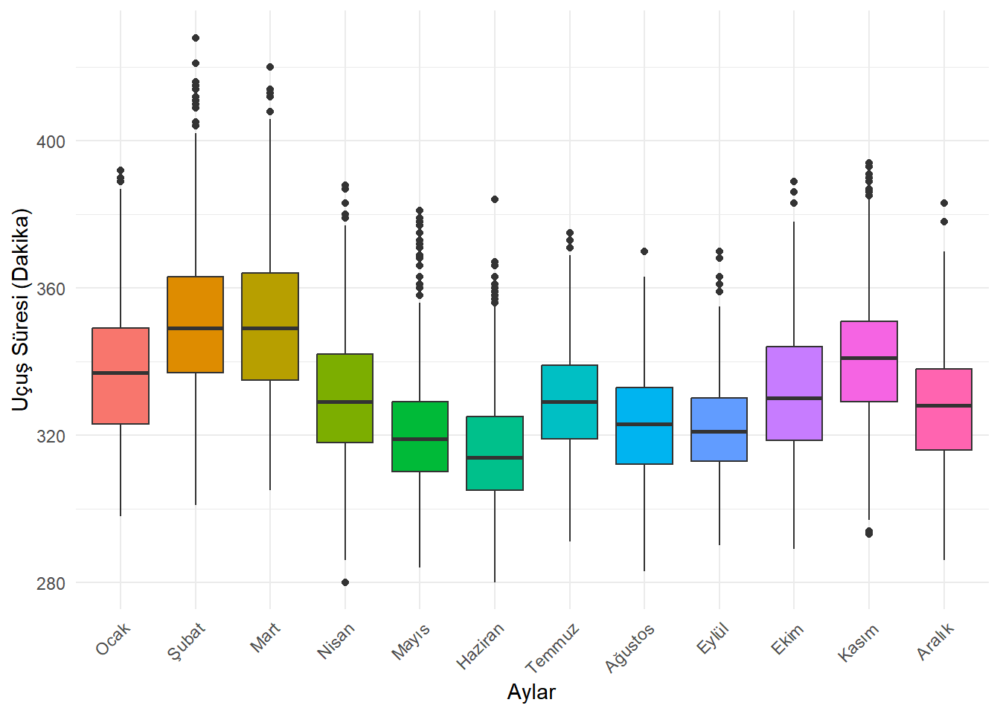
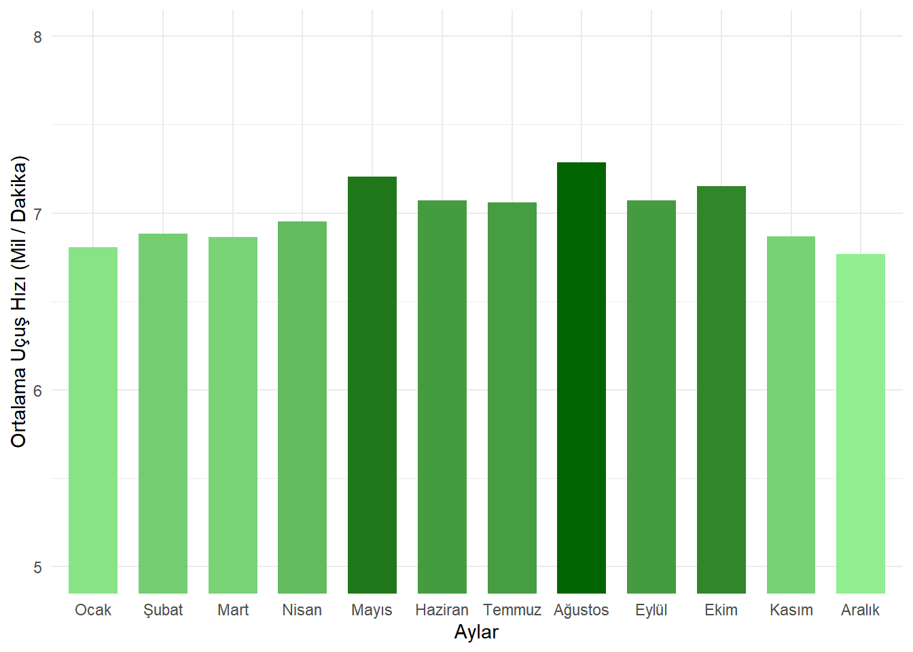

#install.packages("nycflights23", repos = "https://cran.rstudio.com/")
library(nycflights23)Warning: package 'nycflights23' was built under R version 4.5.3library(dplyr)Warning: package 'dplyr' was built under R version 4.5.3
Attaching package: 'dplyr'The following objects are masked from 'package:stats':
filter, lagThe following objects are masked from 'package:base':
intersect, setdiff, setequal, unionlibrary(ggplot2)
data(flights)
class(flights)[1] "tbl_df" "tbl" "data.frame"head(flights)# A tibble: 6 × 19
year month day dep_time sched_dep_time dep_delay arr_time sched_arr_time
<int> <int> <int> <int> <int> <dbl> <int> <int>
1 2023 1 1 1 2038 203 328 3
2 2023 1 1 18 2300 78 228 135
3 2023 1 1 31 2344 47 500 426
4 2023 1 1 33 2140 173 238 2352
5 2023 1 1 36 2048 228 223 2252
6 2023 1 1 503 500 3 808 815
# ℹ 11 more variables: arr_delay <dbl>, carrier <chr>, flight <int>,
# tailnum <chr>, origin <chr>, dest <chr>, air_time <dbl>, distance <dbl>,
# hour <dbl>, minute <dbl>, time_hour <dttm>str(flights)tibble [435,352 × 19] (S3: tbl_df/tbl/data.frame)
$ year : int [1:435352] 2023 2023 2023 2023 2023 2023 2023 2023 2023 2023 ...
$ month : int [1:435352] 1 1 1 1 1 1 1 1 1 1 ...
$ day : int [1:435352] 1 1 1 1 1 1 1 1 1 1 ...
$ dep_time : int [1:435352] 1 18 31 33 36 503 520 524 537 547 ...
$ sched_dep_time: int [1:435352] 2038 2300 2344 2140 2048 500 510 530 520 545 ...
$ dep_delay : num [1:435352] 203 78 47 173 228 3 10 -6 17 2 ...
$ arr_time : int [1:435352] 328 228 500 238 223 808 948 645 926 845 ...
$ sched_arr_time: int [1:435352] 3 135 426 2352 2252 815 949 710 818 852 ...
$ arr_delay : num [1:435352] 205 53 34 166 211 -7 -1 -25 68 -7 ...
$ carrier : chr [1:435352] "UA" "DL" "B6" "B6" ...
$ flight : int [1:435352] 628 393 371 1053 219 499 996 981 206 225 ...
$ tailnum : chr [1:435352] "N25201" "N830DN" "N807JB" "N265JB" ...
$ origin : chr [1:435352] "EWR" "JFK" "JFK" "JFK" ...
$ dest : chr [1:435352] "SMF" "ATL" "BQN" "CHS" ...
$ air_time : num [1:435352] 367 108 190 108 80 154 192 119 258 157 ...
$ distance : num [1:435352] 2500 760 1576 636 488 ...
$ hour : num [1:435352] 20 23 23 21 20 5 5 5 5 5 ...
$ minute : num [1:435352] 38 0 44 40 48 0 10 30 20 45 ...
$ time_hour : POSIXct[1:435352], format: "2023-01-01 20:00:00" "2023-01-01 23:00:00" ...D <- 2
DD <- 72
sum(is.na(flights$dep_delay))[1] 10738sum(is.na(flights$arr_delay))[1] 12534#c
# Filtreleme işlemini uygulayalım
sonuc <- flights |>
filter(dep_delay > (60 + D),
arr_delay < (30 + D))
# Toplam uçuş sayısını görelim
nrow(sonuc)[1] 326#ç
esik <- 50 + (10*D) # 70
sonuc <- flights |>
group_by(dest) |>
summarise(
ort_gecikme = mean(arr_delay, na.rm = TRUE),
ucus_sayisi = n()) |>
filter(ucus_sayisi >= esik) |>
arrange(desc(ort_gecikme))
# En yüksek ortalama gecikmeye sahip destinasyon
sonuc[1, ]# A tibble: 1 × 3
dest ort_gecikme ucus_sayisi
<chr> <dbl> <int>
1 PSE 37.6 333#d
sonuc <- flights |>
filter(origin %in% c("EWR", "JFK", "LGA"),
dep_delay > D) |>
group_by(origin) |>
summarise(
average_delay = mean(dep_delay, na.rm = TRUE),
sd_delay = sd(dep_delay, na.rm = TRUE),
toplam_geciken_ucus_sayisi = n())
sonuc# A tibble: 3 × 4
origin average_delay sd_delay toplam_geciken_ucus_sayisi
<chr> <dbl> <dbl> <int>
1 EWR 50.3 79.9 49394
2 JFK 55.1 85.7 44628
3 LGA 52.4 81.3 44981#e
carrier_list <- flights |>
distinct(carrier) |>
arrange(carrier)
carrier_list# A tibble: 14 × 1
carrier
<chr>
1 9E
2 AA
3 AS
4 B6
5 DL
6 F9
7 G4
8 HA
9 MQ
10 NK
11 OO
12 UA
13 WN
14 YX ucuslar <- flights |>
filter(carrier == "AS") |>
mutate(aylar = factor(month, levels = 1:12,
labels = c("Ocak", "Şubat", "Mart", "Nisan", "Mayıs", "Haziran",
"Temmuz", "Ağustos", "Eylül", "Ekim", "Kasım", "Aralık")))
# 2. Kutucuk Grafiğini (Boxplot) çizdirelim
ggplot(ucuslar, aes(x = aylar, y = air_time, fill = aylar)) +
geom_boxplot() +
theme_minimal() +
labs(x = "Aylar", y = "Uçuş Süresi (Dakika)", fill = "Aylar") +
theme(legend.position = "none") +
theme(axis.text.x = element_text(angle = 45, hjust = 1))Warning: Removed 109 rows containing non-finite outside the scale range
(`stat_boxplot()`).
#f
top10_dest <- flights |>
group_by(dest) |>
summarise(ucus_sayisi = n()) |>
arrange(desc(ucus_sayisi)) |>
slice(1:10)
top10_dest# A tibble: 10 × 2
dest ucus_sayisi
<chr> <int>
1 BOS 19036
2 ORD 18200
3 MCO 17756
4 ATL 17570
5 MIA 16076
6 LAX 15968
7 FLL 14239
8 CLT 12866
9 DFW 11675
10 SFO 11651aylik_orthiz <- flights |>
filter(dest == "MCO", air_time > 0) |>
mutate(hiz = distance / air_time) |>
group_by(month) |>
summarise(ort_hiz = mean(hiz, na.rm = TRUE)) |>
mutate(ay_isim = factor(month, levels = 1:12,
labels = c("Ocak", "Şubat", "Mart", "Nisan", "Mayıs", "Haziran",
"Temmuz", "Ağustos", "Eylül", "Ekim", "Kasım", "Aralık")))
ggplot(aylik_orthiz, aes(x = ay_isim, y = ort_hiz, fill = ort_hiz)) +
geom_col(show.legend = FALSE, width = 0.7) +
scale_fill_gradient(low = "lightgreen", high = "darkgreen") +
theme_minimal() +
labs(x = "Aylar", y = "Ortalama Uçuş Hızı (Mil / Dakika)") +
coord_cartesian(ylim = c(5, 8))